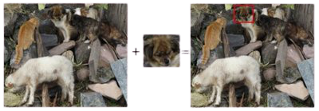
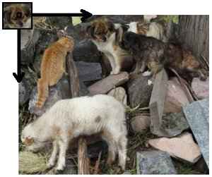

Şablon Eşleştirme Nedir?
Şablon Eşleştirme, bir şablon görüntünün konumunu daha büyük bir görüntüde aramak ve bulmak için kullanılan bir yöntemdir. Şablon, aranan nesnenin kendisidir (ve dolayısıyla görüntünün kendisidir) ve şablon ile görüntünün şablonla eşleşebilecek tüm olası bölümleri arasındaki bir fark ölçüsü hesaplayarak görüntüyü aramak için kullanılır. Kısaca Şablon Eşleştirme, bir görüntünün verilen görüntü modeliyle eşleşen bölümlerinin tanımlanmasına olanak tanıyan üst düzey bir makineli görme tekniğidir.
Nasıl Çalışır?
Şablon Eşleştirmeyi gerçekleştirmek için iki ana bileşene ihtiyacımız var.- Kaynak resim: Şablon resmiyle bir eşleşme bulmayı düşündüğümüz resim.
- Şablon resmi: Kaynak görüntü ile karşılaştırılacak şablon görüntüsü.

- Eşleşen alanı belirlemek için şablon görüntüsünü kaynak görüntüsü üzerinde kaydırarak karşılaştırmalıyız:

- Kaydırarak, şablonu bir seferde bir piksel hareket ettirmeyi kastediyoruz (soldan sağa, yukarıdan aşağıya). Her konumda, o konumdaki eşleşmenin ne kadar "iyi" veya "kötü" olduğunu (veya şablonun kaynak görüntünün söz konusu belirli alanına ne kadar benzer olduğunu) temsil edecek şekilde bir ölçüm hesaplanır.
- Şablon görüntüsünün kaynak görüntü üzerindeki her konumu için, metriği R sonuç matrisinde tutarız. R'deki her konum (x,y) eşleşme metriğini içerir.

- Yukarıdaki görüntü, şablonu Normallleştirilmiş Çapraz Korelasyon algoritması kullanılarak kaydırmanın sonucu R'dir. En parlak yerler en yüksek eşleşmeleri gösterir. Gördüğünüz gibi, kırmızı daire ile işaretlenmiş konum muhtemelen en yüksek değere sahip olandır, bu nedenle konum (bu noktanın köşe olarak oluşturduğu dikdörtgen ve şablon görüntüsüne eşit genişlik ve yükseklik) eşleşme olarak kabul edilir.
- Uygulamada, farklı Şablon Eşleştirme algoritmaları kullanarak daha yüksek veya algoritmaya bağlı olarak daha düşük eşleşme sonuçları bulabiliriz.
Daha fazla bilgi için tıklayınız.